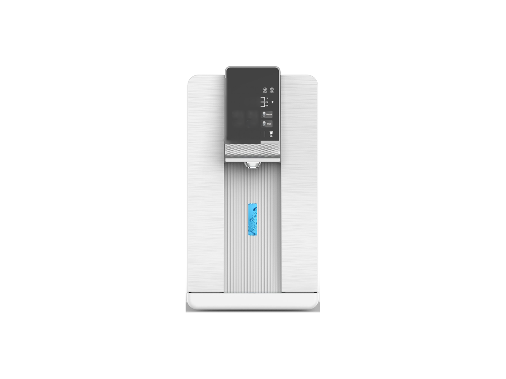

سطح الطاولة
سطح الطاولةRP-C07
منقّي RO مع إبريق تسخين
SKU: RP-C07
MOQ: يُؤكَّد عند الاستفسار
الرئيسية/المنتجات/أنظمة سطح الطاولة/ RP-C04

أنظمة سطح الطاولة
موزّع RO لسطح الطاولة بماء الهيدروجين (W23)
RP-C04 — موزّع RO لسطح الطاولة بماء الهيدروجين. المواصفة الرئيسية: غشاء RO / الإنتاج 200 GPD / 30 لترًا/ساعة. وتُؤكد المواصفات لكل موديل وطلب. وتظهر أدناه أربعة متغيرات أخرى لماء الهيدروجين من السلسلة نفسها (W19 وW20 وW22 وW25).
الجهد / التردد قابل للتكوين حسب بلد الوجهة. تُؤكد التكوينات الأخرى لكل طلب.
RP-C04 هو موزّع RO لسطح الطاولة بماء الهيدروجين مبني على الموديل الرئيسي (W23)، مع أربعة متغيرات أخرى لماء الهيدروجين (W19 وW20 وW22 وW25) في السلسلة نفسها. ويعمل الموديل الرئيسي بقدرة 200 GPD / 30 لترًا/ساعة مع حجم منقّى مقنن يبلغ 2000 لتر، وترشيح مركّب PAC + RO + تمعدن طبيعي، وتحليل كهربائي SPE لتوليد الهيدروجين. وتشترك السلسلة بأكملها في خلط الغاز والسائل SUPERMIX، وترشيح RO، والتبريد بأشباه الموصلات، وUVC، والتسخين السريع في 3 ثوانٍ، وخزان مياه كبير.
ما الحد الأدنى لكمية الطلب؟
الطلب الأول 200 وحدة لكل موديل، وإعادة الطلب 500 وحدة.
هل يمكنني طلب عينة قبل طلب بالجملة؟
نعم. العينات جاهزة خلال 15 يومًا، وتُسترد رسوم العينة عند أول طلب بالجملة. تستغرق الطلبات بالجملة 40 يومًا بعد اعتماد العينة وتُشحن FOB Shenzhen.
كيف تختلف المتغيرات الخمسة؟
أرقام السعة والأبعاد والحجم المقنن الكاملة مذكورة للموديل الرئيسي (W23). تشترك المتغيرات الأربعة الأخرى في مزايا السلسلة وتختلف في التشطيب. اقتبس باسم RP-C04 وحدد المتغير؛ تُؤكد المواصفات الأخرى لـ W19 وW20 وW22 وW25 لكل طلب.
مرّر فوق صورة متغير لرؤية مواصفاته. على الشاشات اللمسية، انقر على صورة.




المواصفات الكاملة لكل متغير، جنبًا إلى جنب. يُظهر جدول المواصفات أدناه قيم RP-C04.
| المواصفة | RP-C04-1 — الموديل الرئيسي (W23) | RP-C04-2 — متغير هيدروجين (W19) | RP-C04-3 — متغير هيدروجين (W20) | RP-C04-4 — متغير هيدروجين (W22) | RP-C04-5 — متغير هيدروجين (W25) |
|---|---|---|---|---|---|
| الشكل | موزع ماء هيدروجيني لسطح العمل | موزع ماء هيدروجيني لسطح العمل | موزع ماء هيدروجيني لسطح العمل | موزع ماء هيدروجيني لسطح العمل | موزع ماء هيدروجيني لسطح العمل |
| غشاء التناضح العكسي / الإنتاج | 200 GPD / 30 L/h | يُؤكد حسب الطلب | يُؤكد حسب الطلب | يُؤكد حسب الطلب | يُؤكد حسب الطلب |
| الحجم المقنن للمياه المنقاة | 2000 L | يُؤكد حسب الطلب | يُؤكد حسب الطلب | يُؤكد حسب الطلب | يُؤكد حسب الطلب |
| الأبعاد | 475 × 240 × 430 mm | يُؤكد حسب الطلب | يُؤكد حسب الطلب | يُؤكد حسب الطلب | يُؤكد حسب الطلب |
| التحكم في درجة الحرارة | 6 برامج حرارة قابلة للتعديل | يُؤكد حسب الطلب | يُؤكد حسب الطلب | يُؤكد حسب الطلب | يُؤكد حسب الطلب |
| التسخين | 2200 W؛ 18 L/h عند ≥90°C | يُؤكد حسب الطلب | يُؤكد حسب الطلب | يُؤكد حسب الطلب | يُؤكد حسب الطلب |
| توليد الهيدروجين | تحليل كهربائي SPE | يُؤكد حسب الطلب | يُؤكد حسب الطلب | يُؤكد حسب الطلب | يُؤكد حسب الطلب |
| مزايا السلسلة | خلط غاز-سائل SUPERMIX، ترشيح RO، تبريد بأشباه الموصلات، UVC، تسخين سريع في 3 ثوانٍ، خزان ماء كبير | خلط غاز-سائل SUPERMIX، ترشيح RO، تبريد بأشباه الموصلات، UVC، تسخين سريع في 3 ثوانٍ، خزان ماء كبير | خلط غاز-سائل SUPERMIX، ترشيح RO، تبريد بأشباه الموصلات، UVC، تسخين سريع في 3 ثوانٍ، خزان ماء كبير | خلط غاز-سائل SUPERMIX، ترشيح RO، تبريد بأشباه الموصلات، UVC، تسخين سريع في 3 ثوانٍ، خزان ماء كبير | خلط غاز-سائل SUPERMIX، ترشيح RO، تبريد بأشباه الموصلات، UVC، تسخين سريع في 3 ثوانٍ، خزان ماء كبير |
| التشطيب | أبيض | أسود / ذهبي | أبيض فضي | أبيض | برونزي-بني |
| الجهد / التردد | قابل للتكوين حسب بلد الوجهة | قابل للتكوين حسب بلد الوجهة | قابل للتكوين حسب بلد الوجهة | قابل للتكوين حسب بلد الوجهة | قابل للتكوين حسب بلد الوجهة |
مزايا السلسلة هي المذكورة لسلسلة W19 / W20 / W22 / W23 / W25 في الكتالوج. تُؤكد السعة والأبعاد والحجم المقنن الفردية لمتغيرات W19 وW20 وW22 وW25 لكل طلب — لا ننشر أرقامًا غير مؤكدة.
12 صفوف مواصفات من كتالوج ROPureOEM.
| غشاء التناضح العكسي / الإنتاج | 200 GPD / 30 L/h |
|---|---|
| الحجم المقنن للمياه المنقاة | 2000 L |
| الترشيح | مركّب PAC + RO + تمعدن طبيعي |
| توليد الهيدروجين | تحليل كهربائي SPE |
| التحكم في درجة الحرارة | 6 برامج حرارة قابلة للتعديل |
| التسخين | 2200 W؛ 18 L/h عند ≥90°C |
| الخزانات | ماء خام 6 L؛ مياه صرف 2.5 L |
| مياه التغذية / ضغط العمل | مياه صنبور بلدية؛ 4–38°C؛ 0.4–0.8 MPa |
| الهيكل / الوزن الصافي | ABS / 10.7 kg |
| الأبعاد | 475 × 240 × 430 mm |
| الجهد / التردد | قابل للتكوين حسب بلد الوجهة |
| تكوينات أخرى | يُؤكد حسب الطلب |
المواصفات مأخوذة من كتالوج ROPureOEM. وعندما لا تكون القيمة مؤكدة بعد، تُدرج على أنها «مؤكدة لكل طلب» — ونحن لا ننشر أرقامًا غير مؤكدة.
سطح الطاولةمنقّي RO مع إبريق تسخين
SKU: RP-C07
MOQ: يُؤكَّد عند الاستفسار
 سطح الطاولة
سطح الطاولةمنقّي سطح طاولة بخرطوشة متكاملة
SKU: RP-C08
MOQ: يُؤكَّد عند الاستفسار
 سطح الطاولة
سطح الطاولةمنقّي RO مع ثلج وماء ساخن وبارد
SKU: RP-C09
MOQ: يُؤكَّد عند الاستفسار
 سطح الطاولة
سطح الطاولةRO سطح طاولة بتبريد بالضاغط
SKU: RP-C10
MOQ: يُؤكَّد عند الاستفسار